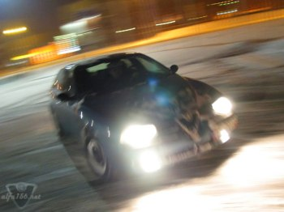
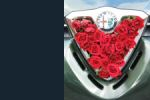
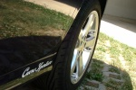
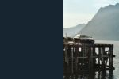
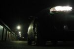

| .: Photo Competition :. |
| .: Winner contribution :. |
 |
12 points - Winner picture! Tomek says about the winning picture that it was taken for fun of his good friend Kamil (hardcore Alfisti) when they met for some "night slides" in the snow. Both of them are members of Ik@r - The Internet Alfa Romeo Club of Poland. Tomek is very crazy about photography which is both his hobby and his job. When not taking pictures, he is driving in his black 156 2,5 V6. Visit Tomeks photo page! Picture taken by: Tomek |
| Kamil's short story about the night of the photo shoot: Once upon a time, in a faraway country called Poland, there was a severe snowy winter keeping people at homes by their fireplaces. So the roads were empty, milky-white and slippery... One day very heavy frost struck and most drivers were afraid even to think about rolling their cars out of the warm garages. But not two weird guys, calling themselves Alfisti, whatever may it mean. Those two blokes, instead of hitting the sack, warmed up their Alfas and drove out to enjoy slippy surfaces; in fact the more slippy they were, the wider smile popped up on their faces. They just could not stop sliding their Alfas all over the frozen city of Katowice. Furious oversteer - it was the name of the game. Despite the unfriendly ass-dragging nature of their 156es, with the little help of LFB (and without the disturbance of ABS) they managed to get entertained as hell all night long. Throwing the beautifully sculpted, azzuro fantasia coloured body from one corner to another and listening to the powerful growl of V6 spinning the front wheels, they decided to take a series of photos and share the immaculate fun of driving beyond the grip with other Alfisti all over the world. So take a moment and enjoy this little piece of frozen high speed sideways action balancing between the motoring heaven and motoring hell. And if anyone ever convinces you FWD cars ain't fun, tell him to buy Alfa and learn to drive. - Kamil |
| .: The rest of top five :. |
 |
Score: 11 points Place: 2nd Picture by: Arne Gran (Norway) |
 |
Score: 8 points Place: 3rd Picture by: Rekettyei Tamás (Hungary) |
 |
Score: 6 points Place: 4th Picture by: Lars G. Fredheim (Norway) |
 |
Score: 5 points Place: 5th Picture by: Stein Erik Hanssen (Norway) |
| .: Photo competition :. |